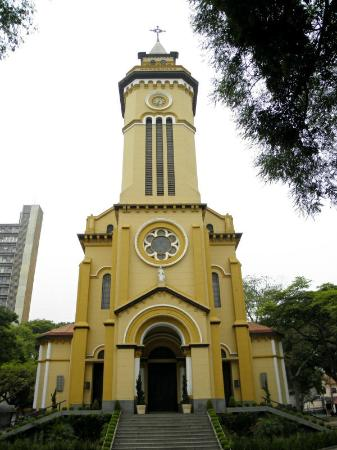

Santo André
História, Indústria e Cultura no ABC Paulista
História
Santo André começou como um pequeno povoado agrícola no século XVI, às margens do Rio Tamanduateí. A região era conhecida por suas terras férteis e pela presença de indígenas da etnia Tupi-Guarani.
O crescimento urbano acelerou no século XIX com a instalação da estrada de ferro São Paulo Railway e o surgimento de indústrias. Em 1938, Santo André conquistou sua emancipação política, tornando-se município independente. Hoje faz parte da região do ABC Paulista, importante polo industrial do Brasil.
Pontos turísticos
Apesar de ser essencialmente industrial, Santo André oferece opções de lazer e cultura:
• Parque Central – grande área verde no centro da cidade, com lagos e áreas de caminhada.
• Parque Natural Municipal das Nascentes – preserva a flora e fauna local, ideal para trilhas e ecoturismo.
• Catedral de Santo André – ponto histórico e religioso da cidade.
• Museu de Santo André – conta a história local, com exposições permanentes e temporárias.
• Teatro Municipal de Santo André – palco de peças, shows e eventos culturais.
• Centro Cultural Santo André – espaço de exposições, cursos e atividades artísticas.
Curiosidades
• Santo André é uma das cidades mais antigas da região do ABC Paulista, com origem ligada ao ciclo agrícola do café.
• Faz parte do polo industrial do ABC, conhecido mundialmente por sua produção metalúrgica e automobilística.
• Tem um dos melhores índices de qualidade de vida da região, combinando infraestrutura urbana e áreas verdes.
• A cidade abriga universidades e centros de pesquisa que contribuem para o desenvolvimento local.
Eventos culturais, feiras e festivais movimentam a cidade durante o ano, promovendo arte, gastronomia e música.
Cultura e Gastronomia
A cultura de Santo André é marcada pela mistura de tradição e modernidade. A cidade mantém eventos culturais, como apresentações de teatro, música e dança, além de festivais gastronômicos.
Se você quiser, posso continuar com São Bernardo do Campo, Mauá e outras cidades do ABC Paulista, e depois juntar todos esses textos em um guia completo do ABC e do interior paulista.
Voltar